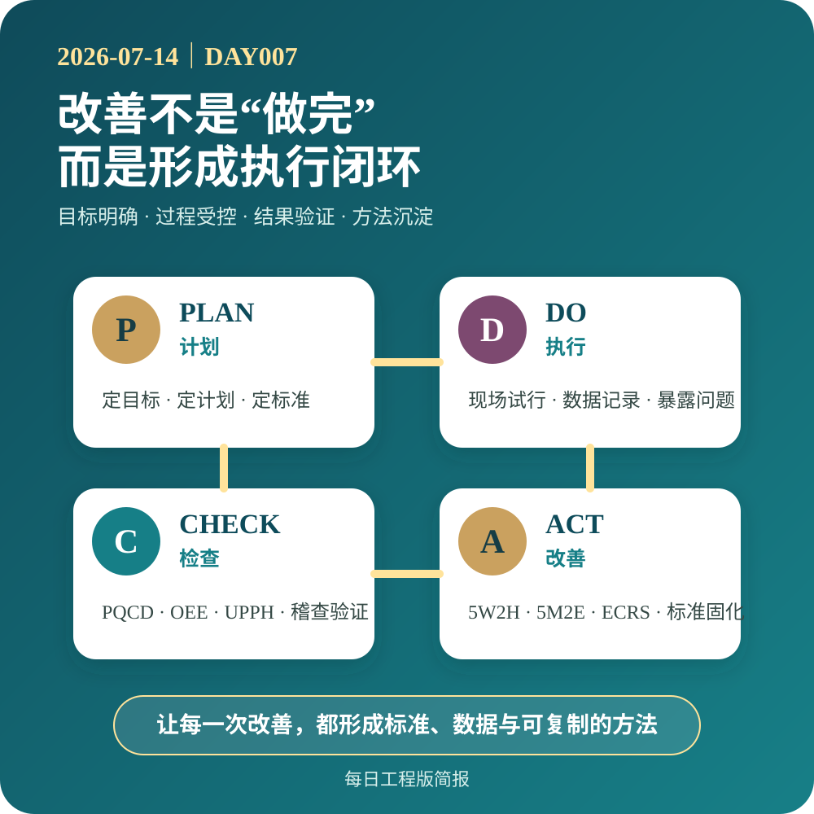

2026-07-14｜管理与执行 DAY007
改善不是“做完”，而是形成执行闭环
很多改善项目在方案落地、数据好转后就被视为结束，但没有把有效做法转化为标准，没有明确维护责任，也没有形成持续检查与复盘机制。时间一长，现场往往重新回到原来的状态。
真正成熟的改善，不止要解决一次问题，更要形成目标、计划、标准、执行、检查、改善和知识沉淀的闭环。
目标决定方向，计划明确路径，标准统一方法，执行暴露问题，检查校准偏差，改善推动升级，知识沉淀则让经验能够复制。只有这七个环节相互衔接，改善成果才不会依赖某个人，而会逐步成为组织能力。
对制造现场而言，每一项有效改善最终都应留下可维护的SOP、点检表、数据口径、责任机制或复盘记录。把一次成功变成可重复的方法，才是持续改善真正的价值。